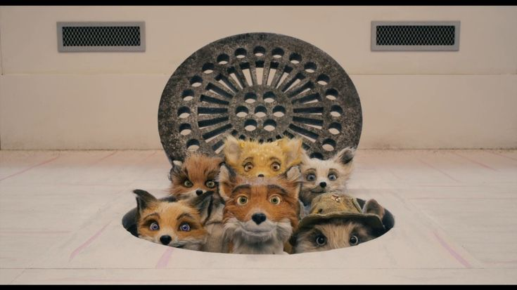

04 / 05
EL
REFUGIO
Las acciones de Mr. Fox terminan afectando a todos los animales que viven cerca de él.
El refugio representa el momento en el que el conflicto deja de ser únicamente individual y se convierte en un problema colectivo.

UNA COMUNIDAD BAJO TIERRA
Aunque Mr. Fox provocó el problema, los animales tendrán que trabajar juntos para poder sobrevivir.
Parece que existe una última salida...
SEGUIR EL TÚNEL →